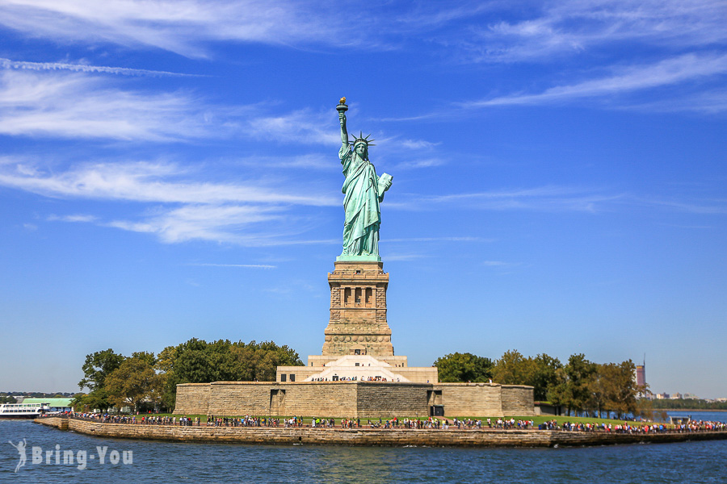

紐約自由女神像
自由女神像（英語：Statue of Liberty）又名自由照耀世界（英語：Liberty Enlightening the World，法語：La Liberté éclairant le monde），是位
於美國紐約港自由島的巨型古典主義塑像，由菲德里克·奧古斯特·巴托爾迪設計，古斯塔夫·艾菲爾建造，1886年10月28日落成，是法國人民送給美國人民
的禮物。塑像人物是身穿長袍的女子，代表羅馬神話中的自主神，她右手高舉火炬，左手的冊子上用羅馬數字寫有美國獨立宣言簽署日期：「JULY
IV MDCCLXXVI」（1776年7月4日），腳下還有斷裂的鎖鏈。這座塑像是自由和美國的象徵，也是對外來移民的歡迎信號。
法國法學教授和政治家愛德華·勒內·德·拉布萊曾於1865年提議，法國和美國人民應該共同製作美國獨立紀念品，他的構想可能是為紀念南北戰爭以北軍勝
利、奴隸制壽終正寢結束。巴托爾迪正是受拉布萊啟發而開始設計塑像，但由於當時法國的政治形勢陷入困境，因此塑像建造工作直到19世紀70年代初才
展開。1875年，拉布萊提出法國為塑像注資，美國提供場地並製造底座。巴托爾迪在雕塑設計完成前就做好頭部和高舉火炬的手臂，這些部分還在國際博
覽會上宣傳展出。1876年，神像舉起火炬的手臂在費城百年博覽會展出，再從1876到1882年在紐約麥迪遜廣場展出。籌款的進展非常緩慢，其中又以美
國為甚，到1885年時，底座的建設仍然受到缺乏資金的威脅。《紐約世界報》出版商約瑟夫·普立茲發起捐款，雖然大部分捐獻金額都不到一美元，但吸引
了超過12萬人捐助，這一項目才得以完成。塑像在法國建成，再裝船跋涉重洋運抵當時的貝德羅島，裝到已經完成的底座上。塑像完成之際，紐約舉行了
歷史上的首次紙帶遊行，美國總統格羅弗·克利夫蘭主持了落成儀式。
自由女神像起初由美國燈塔委員會負責管理，1901年管理權移交戰爭部，1933年，美國國家公園管理局開始負責塑像的維護和管理工作。1938年的大部分
時間裡，塑像都因翻新工程暫停向公眾開放。1980年代初，塑像出現嚴重老化，必須加以重大修復，因此塑像於1984年至1986年關閉，將火炬和大部分
內部結構替換。2001年的九一一襲擊事件後，塑像出於安全和保安方面原因再度關閉，其底座於2004年重新開放，而塑像則直到2009年才開放，還對能
夠登上王冠的遊客人數設了限制。包括底座和地基在內的整座塑像之後又關閉了一年，直到2012年10月28日再度開放，目的是安裝輔助樓梯等安全保障
設備，自由島在這期間一直保持開放。不過就在塑像重新開放次日，自由島因颶風桑迪的影響導致關閉，於2013年7月4日再次開放。出於安全方面考量
，火炬周圍的陽台自1916年起就不再面向公眾開放。